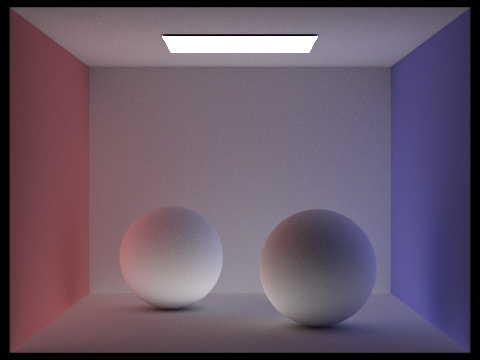
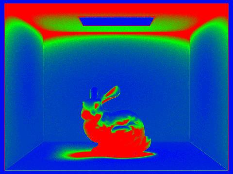

Overview
In this project, we built a ray tracer with a couple optimizations in mind to render photorealistic images. To simulat lighting into our scene, we sampled each pixel a lot of times by generating and tracing rays from our camera perspective (us) into the scene. We simulated effects of direct lighting by implementing uniform hemisphere sampling and light importance sampling. We also, simulated effects of indirect lighting by recursively tracing rays for a defined number of bounces in the scene which allowed us to calculate the indirect lighting contributions to the brightness of a pixel. Finally, to improve the performance of our ray tracer, we implemented a bounding volume hierarchy for effectively calculating ray intersections with scene primitives and adaptive sampling, leveraging confidence intervals to prune the pixel sampling process.
Part 1: Ray Generation and Scene Intersection (20 Points)
Walk through the ray generation and primitive intersection parts of the rendering pipeline.
Camera Ray Generation:
Camera ray generation is an integral part of the rendering pipeline because it allows us to cast rays into a 3D scene in world space to approximate the value of the corresponding pixel in 2D image space.
We generate rays in in world space by first converting image space (x,y) coordinates to camera space.
These (x, y) coordinates in image space are the the locations that we are interested in sampling. After generating a ray in camera space, we convert that camera space ray to world space, ready for it to be traced throughout the 3D scene.
Primitive Intersection:
Primitive intersection is vital to the ray tracing pipeline because it allows us to determine where our generated ray intersects the scene, since the scene is entirely made up of primitives. Detecting intersections allows us to make calculations such as the following intersections of a ray bouncing, the radiance at the point of intersection, shadow rays, and much more.
Explain the triangle intersection algorithm you implemented in your own words.
Algorithm:
1. Calculate the barycentric coordinates and time of intersection using the Moller Trumbore intersection algorithm.
2. Check whether the time of intersection lies inside the clip values of the ray (min_t and max_t). If it lies within this interval, then we know that the ray has intersected the plane that the triangle lies on (time of intersection is not infinity) and is a valid intersection. Otherwise, return false if the time of intersection does not lie in this interval.
3. Check whether the barycentric coordinates are non-negative and sum to 1. If they are then our ray has intersected the triangle and we can return true, otherwise return false.
Show images with normal shading for a few small .dae files.

|
|
|
|

|
Part 2: Bounding Volume Hierarchy (20 Points)
Walk through your BVH construction algorithm. Explain the heuristic you chose for picking the splitting point.
Split Heuristic
We calculate the centroid of the bounding box that contains all the primitives. We then partition all primitives based off each axis of the bbox's centroid. The axis that partitions the primitives the most evenly is the axis that is chosen for paritioning the scene.
BVH construction:
1. Create a new bbox object and put all primitives into it from the start to end iterator.
2. If the number of primitives in the bounding box are less than or equal to the maximum defined leaf size, then return a new BVH node with the bbox from step 1 and set the start and end BVH pointers to start and end from the arugments. This returned BVH node is a leaf of the BVH tree.
3. Allocate two vectors called left and right to the heap that will store partitioned primitives. Also initialize a variable called diff that keeps track of the lowest difference in size of two groups from a partition. These will be used in the steps below.
4. Get the centroid of the bbox and iterate three times over all items in the bbox.
At each iteration we will be comparing a different axis from the bbox's centroid with the centroids of all scene primitives in the bbox to find the axis that partitions the primitives in space the most evenly.
5. Inside each iteration, partition the elements into two splits, left_split and right_split which are vectors initialized inside the for-loop and allocated on the heap. WLOG, partition the primitives that lie to the left of the axis into left_split and the primitives that lie to the right or on the axis into the right_split. The axis that we are partioning over is the x, y, or z axis of the bbox centroid.
6. After partitioning the primitives into left_split and right_split, calculate the difference between the size of the left and right split. If this difference is less than diff, free left and right and reassign them to left_split and right_split respectively. Additionally, update diff to the difference that was less than diff. Otherwise, if the difference in sizes of the two splits are not less than diff then do nothing.
7. After iterating three times to find the best axis to partition, check for an edge case where all the primitives in the bbox are in one split. This happens when the centroids of all primitives are stacked on top of each other. We can check for this by comparing if the length of left_split is equal to 0 or the total number of primitives in the bbox. If it is, return a BVH node so the bbox will become a leaf on the BVH tree.
8. Otherwise, create a new BVH node and assign the l and r pointers of the new BVH node to the result of two recursive calls to construct_bvh respectively. The new iterator for the two recursive calls respectively will be the iterators for left and right.
9. Finally, return the new BVH node from the previous step.
Show images with normal shading for a few large .dae files that you can only render with BVH acceleration.

|

|
|
|
|
Compare rendering times on a few scenes with moderately complex geometries with and without BVH acceleration. Present your results in a one-paragraph analysis.
Without BVH acceleration, rendering scenes with many primitives take a couple magnitudes longer than scenes rendered with BVH acceleration. For instance, rendering CBbunny.dae which has 28588 primitives without and with BVH acceleration takes 21.5892 and 0.0338 seconds respectively. Additionally, rendering bench.dae which has 67808 primitives without and with BVH acceleration takes 43.5725 and 0.0163 seconds respectively. Finally, rendering dragon.dae which has 105120 primitives without and with BVH acceleration takes 81.0416 and 0.0748 seconds respectively. For reference, these images were rendered with a M1 pro machine. The naive implementation tests for an intersection with every primitive in the scene whenver a ray is casted. On the other hand, with BVH, we only test for primitive-intersections when rays have intersected the bounding boxes of the primitives in the BVH leaf nodes. BVH allows us to effectively prune the search space for a ray-primitive intersection.
Part 3: Direct Illumination (20 Points)
Walk through both implementations of the direct lighting function.
Hemisphere:
From the given point of intersection, we cast num_samples number
of rays out into the scene, the directions (wi) of which are sampled
uniformly from the hemisphere. For each of these rays, if it intersects another
object in the scene, we take the zero_bounce_radiance from that
intersection and scale it by both the BSDF value we obtained from the
hemisphere sampling function as well as the cosine of the angle between
wi and the normal at the first (given) intersection. Lastly, we
sum all of these intermediate values and divide the sum by
num_samples, returning the result.
Importance:
From the given point of intersection, we sample rays toward each light in the
scene. For point lights, we only need to sample once, but for area lights, we
sample ns_area_light times. For each sample for a given light, we
call light->sample_L to sample a direction vector from
hit_p to the light, the distance to that light, and the probability
pdf of choosing that wi. We cast a shadow ray from
hit_p out in the wi direction to check if the light ray
is blocked by any objects between hit_p and the light. We set the max_t of the ray
to distToLight - EPS_F to avoid floating point errors and false-positive intersections if the light lies perfectly on another surface.
If wi.z is at least 0 (light is not behind the object) and the shadow ray doesn't
intersect anything, we scale the incoming radiance from the light by the BSDF value
at hit_p (using w_out and wi) and the cosine of the angle
between wi and the normal vector at hit_p. After summing all these intermediate values for a given light,
we divide the sum by num_iters (1 for point lights and ns_area_light otherwise) and add it to L_out.
After processing all lights, we finally return L_out
Show some images rendered with both implementations of the direct lighting function.
| Uniform Hemisphere Sampling | Light Sampling |
|---|---|
|
|
|
Focus on one particular scene with at least one area light and compare the noise levels in soft shadows when rendering with 1, 4, 16, and 64 light rays (the -l flag) and with 1 sample per pixel (the -s flag) using light sampling, not uniform hemisphere sampling.
|
|
|
|
|
|
As the number of light rays increases, the noise in soft shadows decreases significantly. As seen in the picture with 1 light ray, the soft shadows are very speckly and sharp, whereas the render using 64 light rays has very smooth soft shadows.
Compare the results between uniform hemisphere sampling and lighting sampling in a one-paragraph analysis.
In the above two renders of the bunny, the most noticeable difference is that the walls are speckly in the render using hemisphere samplings, whereas they are perfectly smooth in the render using importance sampling. This is most likely due to the inherent randomness in hemisphere sampling. At each intersection between the pixel ray and bunny, hemisphere sampling casts rays out in random directions, which may or may not hit the bright light, leading to higher variance in the calculated light levels between adjacent pixels. With light sampling however, we only cast rays toward light sources, so the variance in light levels between adjacent pixels is much smaller, leading to a smoother blend of lighting as we move our eyes across the wall. Furthermore, the hemisphere sampling render looks darker overall compared to the importance sampling render, which makes sense because all rays casted from the object will hit a light in importance sampling whereas not all rays will hit a light in hemisphere sampling, so the calculated light values in importance sampling should be larger overall. Lastly, in the hemisphere sampling render, there is a halo around the area light at the top of the Cornell Box. However, this halo does not appear in the importance sampling render.
Part 4: Global Illumination (20 Points)
Walk through your implementation of the indirect lighting function.
Indirect Lighting (at_least_one_bounce_radiance) Algorithm:
1. If the ray depth is 0 or less, return the empty vector. Otherwise continue to step 2.
2. Increment L_out with the value returned by one_bounce_radiance.
3. Sample a random direction from the intersection point. Generate a new ray in world space with the origin being the hit_p and the direction being the direction we just sampled. Set the new ray's depth as the old ray's depth - 1 and the new ray's min_t
4. Initialize a new Intersection object called new_isect. Flip a weighted coin with heads having probability p (russian roulette) and if the result is heads and the new ray intersects something in the scene, then recursively call at_least_one_bounce_radiance with the new ray and new_isect passed in. Save the value returned from the recursive call into a variable called recur_result.
5. Incremenet L_out by recur_result scaled by the multiplicative factors defined in the reflection equation and additionally dividing by p (cpdf of heads).
6. Return L_out.
Show some images rendered with global (direct and indirect) illumination. Use 1024 samples per pixel.
|
|
|
Pick one scene and compare rendered views first with only direct illumination, then only indirect illumination. Use 1024 samples per pixel. (You will have to edit PathTracer::at_least_one_bounce_radiance(...) in your code to generate these views.)
|
|

|
Even without direct lighting, the the indirect-only render looks far more realistic and three-dimensional compared to the direct-only render. Because the direct-only render only displays lighting that comes directly from the light source, the bottoms of the spheres are pitch black, as the shadow rays casted from those positions intersect with the sphere. The tops of the spheres are extremely bright, as they have direct line-of-sight to the light source. On the other hand, in the indirect-only render, the bottom of the spheres are lit up by the bounced light from all the other objects in the scene, whereas the tops of the spheres lack the harsh bright lighting seen in the direct-only render. Additionally, the direct-only render has pitch-black ceiling because light rays cannot reach from the light source directly to the ceiling, whereas bounced light in the indirect-only render help light up the ceiling. Lastly, the spheres in the direct-only render have no color, whereas the spheres in the indirect-only render do due to bounced light rays from the walls becoming colored.
For CBbunny.dae, compare rendered views with max_ray_depth set to 0, 1, 2, 3, and 100 (the -m flag). Use 1024 samples per pixel.
|
|
|
|
|
|
|
|
With every additional bounce, the render looks more and more realistic and vibrant.
-
At
m=0, only light that comes directly from a light source into the camera is rendered. These rays do not light up any other objects in the scene, so everything else except for the light source look completely dark. -
At
m=1, we add direct lighting into the scene, which lights up the bunny and four of the five walls. This is because rays from the light source bounce once onto these objects and go directly into the camera from there. The bottom of the bunny is still dark because rays from the light source cannot directly bounce to that area and then into the camera. -
At
m=2, the ceiling and the bottom of the bunny now light up. This is because rays from the light can bounce off the floor, the onto the bottom of the bunny or the ceiling, and then into the camera. At this point, the sides of the bunny also take on a colorful tint, because rays from the light can now bounce to the wall, then to the bunny, then into the camera. The floor/ceiling/back walls also display slight colorful tints due to the same effect. -
At
m=3, the left side of the render takes on a very noticeable warm red-ish tint, and the right side of the render takes on a cool blue-ish tint. This is because, with three bounces allowed, rays from the light source can now bounce to the red/blue walls, onto the ceiling/floor/back walls, then onto one of the other ceiling/floor/back walls, and then into the camera. Because of this additional bounce, the colorful tints noted in the previousm=2are more pronounced. -
At
m=100, the entire render looks more colorful and the colorful tint from the previous parts is far more pronounced. This is because now rays can bounce all over the place, spreading the colors from the side walls onto all the other objects in the scene (and multiple times too, which is why everything looks more vibrant)
Pick one scene and compare rendered views with various sample-per-pixel rates, including at least 1, 2, 4, 8, 16, 64, and 1024. Use 4 light rays.
|
|
|
|
|

|
|
|
|
|
|
As the number of samples per pixel increases, the image looks much sharper and far less speckly.
At s=0, the image looks darker with sparse light specks scattered throughout.
At s=1024, the number of bright specks decreases signficantly, most likely because they are being blended together with more samples from brighter areas (the render overall looks much brighter)
Part 5: Adaptive Sampling (20 Points)
Explain adaptive sampling. Walk through your implementation of the adaptive sampling.
Adaptive sampling is a sampling method that increases sampling efficiency. It allows us to stop sampling a pixel early if it has "converged" near its true value.
This saves computational resources and time when sampling pixels that converge really fast with low sample rates. We measure convergence by calculating a confidence interval and stop once we have high certainty (95% confidence) that our sampled mean falls within a certain range of the true mean.
This interval is defined as the observed mean minus "I" (the margin of error). "I" is (1.96 * standard deviation) / sqrt(sample size). Once we sample enough such that "I" <= maxTolerance * sample mean, then we have calculated the desired confidence interval and can stop sampling that pixel.
Adaptive Sampling Algorithm:
1. Generate a ray at a randomly sampled location and calculate the radiance estimate at that point.
2. Update variables responsible for keeping track of how many times we sampled the pixel so far, the cumulative radiance estimate, cumulative illuminance, and cumulative illuminance squared of all samples so far.
3. Check if the total number of samples so far is divisible by the sample batch size. If it is, then we should check whether the inequality ("I" <= maxTolerance * sample mean) is satisfied. If it is satisfied, stop sampling the pixel and update the sample buffer with the sample radiance mean and set the sample count buffer to the number of times we sampled that pixel. Otherwise, if the inequality is not satisfied or the total number of samples so far is not divisible by the sample batch size, repeat steps 1-3 for num_samples of times or until the inequality is satisfied.
Pick two scenes and render them with at least 2048 samples per pixel. Show a good sampling rate image with clearly visible differences in sampling rate over various regions and pixels. Include both your sample rate image, which shows your how your adaptive sampling changes depending on which part of the image you are rendering, and your noise-free rendered result. Use 1 sample per light and at least 5 for max ray depth.
|
|

|

|
|